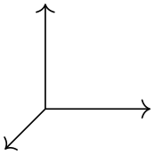
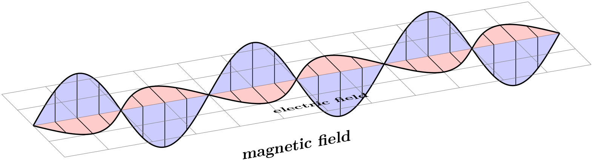
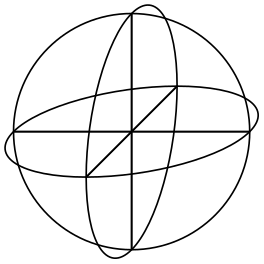

The TikZ and PGF Packages
Manual for version 3.1.9a
Libraries
40 Three Dimensional Drawing Library
TikZ Library 3d ¶
\usetikzlibrary{3d} %
LaTeX
and plain
TeX
\usetikzlibrary[3d] % ConTeXt
This package provides some styles and options for drawing three
dimensional shapes.
40.1 Coordinate Systems¶
Coordinate system xyz cylindrical ¶
The xyz cylindrical coordinate system allows to you specify a point in terms of cylindrical coordinates, sometimes also referred to as cylindrical polar coordinates or polar cylindrical coordinates. It is very similar to the canvas polar and xy polar coordinate systems with the difference that you provide an elevation over the \(xy\)-plane using the z key.
/tikz/cs/angle=⟨degrees⟩ (no default, initially 0)
The angle of the coordinate interpreted in the ellipse whose axes are the \(x\)-vector and the \(y\)-vector.
/tikz/cs/radius=⟨number⟩ (no default, initially 0)
A factor by which the \(x\)-vector and \(y\)-vector are multiplied prior to forming the ellipse.
/tikz/cs/z=⟨number⟩ (no default, initially 0)
Factor by which the \(z\)-vector is multiplied.

\usetikzlibrary {3d}
\begin{tikzpicture}[->]
\draw (0,0,0) --
(xyz cylindrical cs:radius=1);
\draw (0,0,0) --
(xyz cylindrical cs:radius=1,angle=90);
\draw (0,0,0) --
(xyz cylindrical cs:z=1);
\end{tikzpicture}
Coordinate system xyz spherical ¶
The xyz spherical coordinate system allows you to specify a point in terms of spherical coordinates.
/tikz/cs/radius=⟨number⟩ (no default, initially 0)
Factor by which the \(x\)-, \(y\)-, and \(z\)-vector are multiplied.
/tikz/cs/latitude=⟨degrees⟩ (no default, initially 0) ¶
Angle of the coordinate between the \(y\)- and \(z\)-vector, measured from the \(y\)-vector.
/tikz/cs/longitude=⟨degrees⟩ (no default, initially 0) ¶
Angle of the coordinate between the \(x\)- and \(y\)-vector, measured from the \(y\)-vector.
/tikz/cs/angle=⟨degrees⟩ (no default, initially 0)
Same as longitude.

\usetikzlibrary {3d}
\begin{tikzpicture}[->]
\draw (0,0,0) --
(xyz spherical cs:radius=1);
\draw (0,0,0) --
(xyz spherical cs:radius=1,latitude=90);
\draw (0,0,0) --
(xyz spherical cs:radius=1,longitude=90);
\end{tikzpicture}
40.2 Coordinate Planes¶
Sometimes drawing with full three dimensional coordinates is not necessary and it suffices to draw in two dimensions but in a different coordinate plane. The following options help you to switch to a different plane.
40.2.1 Switching to an arbitrary plane¶
/tikz/plane origin=⟨point⟩ (no default, initially (0,0)) ¶
Origin of the plane.
/tikz/plane x=⟨point⟩ (no default, initially (1,0)) ¶
Unit vector of the \(x\)-direction in the new plane.
/tikz/plane y=⟨point⟩ (no default, initially (0,1)) ¶
Unit vector of the \(y\)-direction in the new plane.
/tikz/canvas is plane(no value) ¶
Perform the transformation into the new canvas plane using the units above. Note that you have to set the units before calling canvas is plane.
\usetikzlibrary {3d}
\begin{tikzpicture}[
->,
plane x={(0.707,-0.707)},
plane y={(0.707,0.707)},
canvas is plane,
]
\draw (0,0) --
(1,0);
\draw (0,0) --
(0,1);
\end{tikzpicture}
40.2.2 Predefined planes¶
/tikz/canvas is xy plane at z=⟨dimension⟩(no default) ¶
A plane with
• plane origin={(0,0,⟨dimension⟩)},
• plane x={(1,0,⟨dimension⟩)}, and
• plane y={(0,1,⟨dimension⟩)}.
/tikz/canvas is yx plane at z=⟨dimension⟩(no default) ¶
A plane with
• plane origin={(0,0,⟨dimension⟩)},
• plane x={(0,1,⟨dimension⟩)}, and
• plane y={(1,0,⟨dimension⟩)}.
/tikz/canvas is xz plane at y=⟨dimension⟩(no default) ¶
A plane with
• plane origin={(0,⟨dimension⟩,0)},
• plane x={(1,⟨dimension⟩,0)}, and
• plane y={(0,⟨dimension⟩,1)}.
/tikz/canvas is zx plane at y=⟨dimension⟩(no default) ¶
A plane with
• plane origin={(0,⟨dimension⟩,0)},
• plane x={(0,⟨dimension⟩,1)}, and
• plane y={(1,⟨dimension⟩,0)}.
/tikz/canvas is yz plane at x=⟨dimension⟩(no default) ¶
A plane with
• plane origin={(⟨dimension⟩,0,0)},
• plane x={(⟨dimension⟩,1,0)}, and
• plane y={(⟨dimension⟩,0,1)}.
/tikz/canvas is zy plane at x=⟨dimension⟩(no default) ¶
A plane with
• plane origin={(⟨dimension⟩,0,0)},
• plane x={(⟨dimension⟩,0,1)}, and
• plane y={(⟨dimension⟩,1,0)}.
40.3 Examples¶

\usetikzlibrary {3d}
\begin{tikzpicture}[z={(10:10mm)},x={(-45:5mm)}]
\def\wave{
\draw[fill,thick,fill opacity=.2]
(0,0) sin
(1,1) cos
(2,0) sin
(3,-1) cos
(4,0)
sin
(5,1) cos
(6,0) sin
(7,-1) cos
(8,0)
sin
(9,1) cos
(10,0)sin
(11,-1)cos
(12,0);
\foreach \shift in
{0,4,8}
{
\begin{scope}[xshift=\shift cm,thin]
\draw (.5,0) --
(0.5,0 |- 45:1cm);
\draw (1,0) --
(1,1);
\draw (1.5,0) --
(1.5,0 |- 45:1cm);
\draw (2.5,0) --
(2.5,0 |- -45:1cm);
\draw (3,0) --
(3,-1);
\draw (3.5,0) --
(3.5,0 |- -45:1cm);
\end{scope}
}
}
\begin{scope}[canvas is zy plane at x=0,fill=blue]
\wave
\node at
(6,-1.5) [transform shape] {magnetic
field};
\end{scope}
\begin{scope}[canvas is zx plane at y=0,fill=red]
\draw[help lines] (0,-2) grid
(12,2);
\wave
\node at
(6,1.5) [rotate=180,xscale=-1,transform shape] {electric
field};
\end{scope}
\end{tikzpicture}

\usetikzlibrary {3d}
\begin{tikzpicture}
\begin{scope}[canvas is zy plane at x=0]
\draw (0,0) circle
(1cm);
\draw (-1,0) --
(1,0) (0,-1) --
(0,1);
\end{scope}
\begin{scope}[canvas is zx plane at y=0]
\draw (0,0) circle
(1cm);
\draw (-1,0) --
(1,0) (0,-1) --
(0,1);
\end{scope}
\begin{scope}[canvas is xy plane at z=0]
\draw (0,0) circle
(1cm);
\draw (-1,0) --
(1,0) (0,-1) --
(0,1);
\end{scope}
\end{tikzpicture}